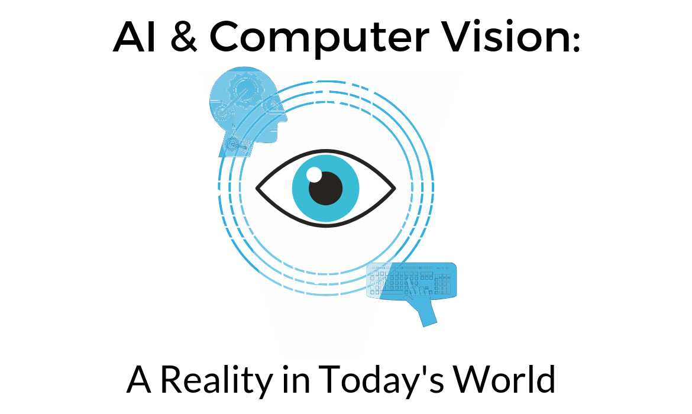

Bartek Kowalski - Computer Vision
Home
Hover for information on CV
What is computer Vision?
Traditional Computer Vision Techniques
Applications of AI in computer Vision
How can I get started with Computer Vision?
Computer Vision
Welcome to my website on the appications of AI in computer vision. Here, you will find information on the basics of CV, as well as some more complex information.

Copyright Ⓒ 2021 Bartek Kowalski.